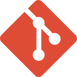
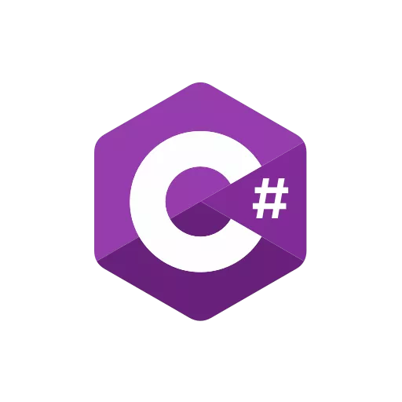
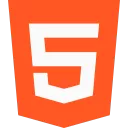
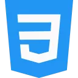

Sobre mim
Como enfermeira recém-formada em processo de transição de carreira para área da tecnologia, sou determinada, persistente e curiosa - essas palavras me definem bem. Atualmente, venho desenvolvendo projetos utilizando HTML, CSS e C#, além de ter a oportunidade de praticar minhas habilidades em serviços em nuvem AWS bem como segurança e redes. Desde que decidi entrar nessa área, tenho buscado aprender constantemente e estou confiante de que tenho as habilidades necessárias para contribuir em sua equipe de desenvolvedores. Além disso, sou voluntária em projetos com crianças em situações de vulnerabilidade há sete anos, o que tem me proporcionado oportunidades de aprimorar meu senso de responsabilidade e habilidade em trabalhar em equipe.
Objetivos
Busco oportunidade em empresa dinâmica e desafiadora para aplicar habilidades e conhecimentos, com possibilidade de crescimento profissional e desenvolvimento pessoal. Como desenvolvedora full stack, busco aplicar minhas habilidades em programação, bancos de dados e desenvolvimento web para criar soluções inovadoras e de alta qualidade que contribuam para o crescimento de uma empresa de destaque no mercado de tecnologia.
Certificações
Bacharelado em Enfermagem
Universidade Anhembi Morumbi 📅 2017 - 2021
Fundamendos AWS
Escola da Nuvem 📅 jan/23 - abr/23
Bootcamp full stack em C# e JavaScript
IMÂ Tech 📅 nov/22 - abr/23
Perfil
Executora Planejadora
Sólides - https://shre.ink/kqbm
Advogada
16Personalities - https://shre.ink/kqbu
Idiomas
Português - nativo
Inglês - intermediário
Hard-Skills
   Soft-Skills
Flexibilidade e resiliência ■
Trabalho em equipe ■
Criatividade ■
Comunicação ■